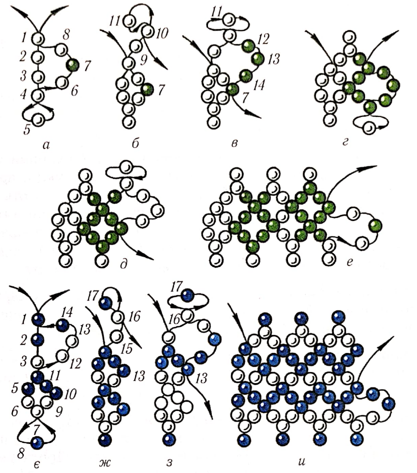

ЛАБОРАТОРНО-ПРАКТИЧНА РОБОТА
Тема: «Ланцюжки із зубчиками»
Мета: засвоєння техніки ланцюжків із зубчиками, виховувати естетичний смак, увагу, повагу та любов до традицій українського народу.
Матеріали та інструменти: бісер різного розміру та кольору, капронові нитки, голки для бісеру.
Порядок виконання роботи:
- Ознайомитись з теоретичними відомостями роботи.
- Виконати завдання практичної роботи.
Теоретичні відомості:
Раніше дівчата прикрашали голову і волосся стрічками-косниками з бісеру. Ажурні й ткані ланцюжки нашивали на смужки полотна, вовняну й шовкову тасьму, які пов’язували навколо голови. Інколи робили ланцюжки із зубчиками на краях, щоб стрічки з бісеру краще трималися. Нанизували їх голкою з ниткою або ниткою.
Практична робота
Виконати вправи:
1. Кривулька(мал. 21) – декоративний зигзагоподібний разок намиста з крупного бісеру. Перший ряд нанизують, набираючи на робочу нитку три-п’ять бісеринок. Протягують голку з ниткою в передостанню бісеринку, притягуючи нитку (мал. 21, а). Для другого та всіх наступних рядів набирають на нитку на одну бісеринку менше (дві-чотири) і повторюють роботу в такій самій послідовності (мал. 21, б).
Якщо в кінці кожного ряду залишити не одну, а три бісеринки, то матимемо фігурну петельку з одно- або різнобарвних бісеринок, яка прикрашає кривульку (мал. 21, в).
Ажурний ланцюжок із зубчиками складніший уроботі, але, знаючи прийоми нанизування ажурного ланцюжка з рівними сторонами і кривульки, зробити його нескладно.

Мал. 21. Кривулька.
2. Ланцюжоку півтора вічка-ромба(мал. 22)
виконують так: перший ряд набирають з п’яти бісеринок 1-5 і протягують
нитку в передостанню бісеринку 4 ряду. Притягують нитку, набирають другий
ряд ланцюжка з трьох бісеринок 6-8, протягуючи нитку крізь першу бісеринку
ряду (мал. 22, а). Притягують нитку і набирають три бісеринки 9-11 для
другого зубчика – закінчення другого і початку третього ряду. Протягують
нитку в передостанню бісеринку10(мал. 22, б).Третій ряд
набирають із трьох бісеринок 12-14, а нитку протягують у середню бісеринку
7 другого ряду (мал. 22, в).Закінчують третій ряд також трьома
бісеринками для зубчика і починають четвертий ряд петлею з трьох бісеринок
(мал. 22, г). У такій послідовності нанизують увесь ланцюжок,
створюючи кольорові узори (мал. 22, д, е).
Закінчивши роботу, пришивають застібку для прикраси на шию, нашивають ланцюжок на тасьму для начільних пов’язок.

Мал. 22. Ланцюжки із зубчиками: а-е–у півтора ромба; є-и–у два з половиною ромба.
- Контрольні питання:
- Як носили ажурні й ткані ланцюжки?
- Як зробити фігурну петельку на краю зубчика?